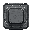
БроняArmor
Броня · 1 кл.Armor · 1 cells
102
Броня: дешёвая защита спереди. Рядом с орудием даёт ему броню.Armor: cheap front protection. Next to a weapon, gives it armor.
Числа — для 1-го уровня; слияние двух одинаковых модулей поднимает уровень до 3-го. Модули старших ступеней появляются в витрине с большим корпусом.
Numbers are for level 1; merging two identical modules raises the level up to 3. Higher-tier modules appear in the shop with a bigger hull.
прочностьhull ·
уронdamage ·
перезарядкаreload ·
энергия (− расход, + выработка)energy (− use, + output) ·
броняarmor ·
слои щитаshield layers ·
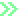

Броня · 1 кл.Armor · 1 cells
102
Броня: дешёвая защита спереди. Рядом с орудием даёт ему броню.Armor: cheap front protection. Next to a weapon, gives it armor.
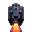
Двигатель · 1 кл.Engine · 1 cells
76%−1
Ускоритель: маленький двигатель 1×1 — немного уклонения. Только в последнем ряду.Booster: a small 1×1 engine — a little evasion. Last row only.
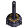
Орудие · 1 кл.Weapon · 1 cells
851.8 с−2
Пушка: стреляет снарядами. Щит держит, толстая броня отбивает рикошетом.Cannon: fires shells. Shields stop them, thick armor makes them ricochet.
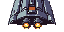
Двигатель · 2 кл.Engine · 2 cells
1010%−1
Двигатель: уклонение корабля. Только в последнем ряду; рядом с другим — больше.Engine: ship evasion. Last row only; more next to another engine.
Генератор · 1 кл.Generator · 1 cells
8+3
Генератор: +3 энергии (4 / 5 по уровню). Рядом с ядром — +1, с другим генератором — +1 каждому; соседнее орудие или щит тратит на 1 меньше.Generator: +3 energy (4 / 5 by level). Next to the core — +1, to another generator — +1 each; an adjacent weapon or shield uses 1 less.
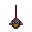
Орудие · 1 кл.Weapon · 1 cells
621 с−2
Лазер: быстрый луч, броню не замечает, щит держит.Laser: a fast beam that ignores armor; shields stop it.
Сенсор · 1 кл.Sensor · 1 cells
6−1
Сенсор: враг уклоняется от ваших выстрелов на 15% реже.Sensor: the enemy dodges your shots 15% less.
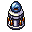
Орудие · 1 кл.Weapon · 1 cells
715 с−2
ЭМИ-излучатель: электрический шар глушит модуль врага на несколько секунд — оружие молчит, щит не держит, двигатель не уводит. В щит — блокирует его слои (1 / 2 / 3 по уровню) на 2 с, на 3-м уровне — на 3 с.EMP emitter: an electric orb jams an enemy module for a few seconds — weapons fall silent, shields stop, engines stall. On a shield it locks layers (1 / 2 / 3 by level) for 2 s, 3 s at level 3.
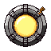
Генератор · 4 кл.Generator · 4 cells
201+10
Большой генератор 2×2: +10 энергии (13 / 16 по уровню). Рядом с ядром — +1, с другим генератором — +1 каждому; соседние орудия и щиты тратят на 1 меньше.Large 2×2 generator: +10 energy (13 / 16 by level). Next to the core — +1, to another generator — +1 each; adjacent weapons and shields use 1 less.
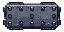
Броня · 2 кл.Armor · 2 cells
185
Тяжёлая броня: большая и крепкая, пушки по ней рикошетят.Heavy armor: big and tough, shells ricochet off it.
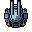
Орудие · 1 кл.Weapon · 1 cells
832.2 с−2
Кинетическая турель: очередь снарядов — 2 / 3 / 4 по уровню. Соседи: у ядра +1 брони; пушка, рельсотрон — +1 выстрел; лазеры, сенсор, ПРО-турель — урон; ракеты, ЭМИ, двигатели, дроны — быстрее; щит, ремонт — прочнее.Kinetic turret: a burst of shells — 2 / 3 / 4 by level. Neighbours: core +1 armor; cannon, railgun — +1 shot; lasers, sensor, point defense — damage; missiles, EMP, engines, drones — faster; shield, repair — sturdier.
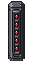
Орудие · 2 кл.Weapon · 2 cells
16143.2 с−3
Ракетница: тяжёлые ракеты летят сквозь щит.Missile launcher: heavy missiles fly through shields.
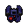
Противоракетная турель · 1 кл.Point defense · 1 cells
81.5 с−1
Противоракетная турель: сбивает вражеские ракеты рядом с кораблём.Point defense: shoots down enemy missiles near the ship.
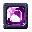
Броня · 1 кл.Armor · 1 cells
101
Отражатель: лазер отлетает от него обратно в стрелка.Reflector: lasers bounce off it back at the shooter.
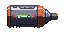
Ремонт · 2 кл.Repair · 2 cells
122 с−1
Ремонтный отсек: сам чинит соседние модули.Repair bay: repairs neighbouring modules on its own.
Щит · 2 кл.Shield · 2 cells
102−3
Щит: слои отбивают пушки и лазеры. У ядра — на слой больше.Shield: layers stop shells and lasers. Next to the core — one more layer.
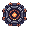
Усилитель · 1 кл.Amplifier · 1 cells
10−1
Усилитель: соседние орудия, щиты, турели, ремонтные отсеки и отсеки дронов работают быстрее (10 / 15 / 20% по уровню) — у дронов чаще выстрелы; щитам — слой, орудиям — урон, генераторам — энергия (+1 / +2 / +3).Amplifier: neighbouring weapons, shields, turrets, repair bays and drone bays work faster (10 / 15 / 20% by level) — drones fire more often; shields get a layer, weapons damage, generators energy (+1 / +2 / +3).
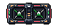
Отсек дронов · 2 кл.Drone bay · 2 cells
1441.8 с−2
Отсек дронов: дроны кружат вокруг корабля и стреляют по ближайшим модулям врага. Погиб отсек — погибли дроны.Drone bay: drones circle the ship and shoot the nearest enemy modules. Lose the bay — lose the drones.
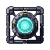
Щит · 4 кл.Shield · 4 cells
204−5
Тяжёлый щит: много слоёв, восстанавливается быстрее.Heavy shield: many layers, recharges faster.
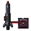
Орудие · 3 кл.Weapon · 3 cells
1432 с−5
Лазерный пулемёт: очередь из 3 лучей, тратит много энергии. Бьёт тот же модуль — каждая перезарядка на 15% быстрее (до 3 раз). Соседи: ядро −1 расход; лазер, импульсный луч — +1 выстрел; щит — разгон до 4 раз; сенсор — разгон сразу; кинетика, ПРО-турель — урон; ракеты, ЭМИ, двигатели, дроны — быстрее; ремонт — прочнее.Laser machine gun: a burst of 3 beams, uses a lot of energy. Hitting the same module — each reload is 15% faster (up to 3 times). Neighbours: core −1 use; laser, pulse beam — +1 shot; shield — ramp up to 4 times; sensor — ramp from the start; kinetic, point defense — damage; missiles, EMP, engines, drones — faster; repair — sturdier.
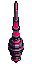
Орудие · 2 кл.Weapon · 2 cells
1853.5 с1−3
Импульсный луч: целится всегда в ядро врага (а не в ближайший модуль, как другие орудия) и бьёт серией импульсов. Каждый импульс бьёт первый модуль на пути к ядру, броня не спасает; разрушил — следующие идут дальше к ядру. Щит не пробивает: каждый импульс снимает слой и отражается.Pulse beam: always aims at the enemy core (not the nearest module like other weapons) and fires a burst of pulses. Each pulse hits the first module on the way to the core, ignoring armor; once it breaks, the next pulses go on to the core. Can't pierce shields: each pulse strips a layer and glances off.
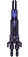
Орудие · 2 кл.Weapon · 2 cells
12143 с−3
Рельсотрон: сильный и быстрый снаряд пробивает щит (снимает слой и летит дальше) и бьёт насквозь: разрушил модуль — остаток урона идёт в следующий.Railgun: a strong, fast shell pierces shields (strips a layer and flies on) and goes through: once it breaks a module, the rest of the damage hits the next.
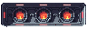
Двигатель · 3 кл.Engine · 3 cells
1418%−2
Маршевый двигатель: большое уклонение. Только в последнем ряду.Thruster: big evasion. Last row only.
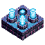
Орудие · 4 кл.Weapon · 4 cells
3014.5 с1−4
Глушилка: ЭМИ босса — залп из трёх шаров. Только у босса.Jammer array: the boss's EMP — a volley of three orbs. Boss only.
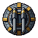
Орудие · 4 кл.Weapon · 4 cells
3093 с2−4
Главный калибр: оружие флагмана — залп из двух тяжёлых снарядов. Только у босса.Main battery: the flagship's weapon — a volley of two heavy shells. Boss only.
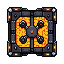
Отсек дронов · 4 кл.Drone bay · 4 cells
3032 с1−4
Улей: отсек босса — четыре дрона. Только у босса.Hive: the boss's bay — four drones. Boss only.
Орудие · 4 кл.Weapon · 4 cells
3094.5 с1−4
Минный заградитель: медленные мины очередью — проходят сквозь щит, взрываются по площади; сбиваются турелью. Только у босса.Minelayer array: slow mines in a burst — they pass through shields and blow up an area; point defense can shoot them down. Boss only.